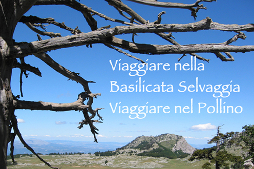
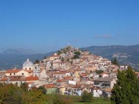

Per escursione guidate nel Pollino telefonare al 347.2631462
{% endbox %} {% end_only_on_month %} {% only_on_month 6 7 8 3 4 5 %} {% contentbox "Basilicata Selvaggia" %} Per escursione guidate nel Pollino telefonare al 347.2631462
{% endbox %} {% end_only_on_month %} {% contentbox "Rotonda" %}  Caratteristico centro medioevale della Basilicata, ricco di viuzze, portali in pietra, fontane. Al confine con la Calabria, in posizione centrale per potersi muovere agevolmente in entrambi i versanti del Parco Nazionale Pollino.Piccolo Agriturismo La Terrazza
{% endbox %} {% node "/small/language/" "Scegli la lingua" %} {% endbox %} {% node "/small/info" "Informazioni Telefoniche" %} VIAGGIARE NEL POLLINO è un servizio di informazione on-line.